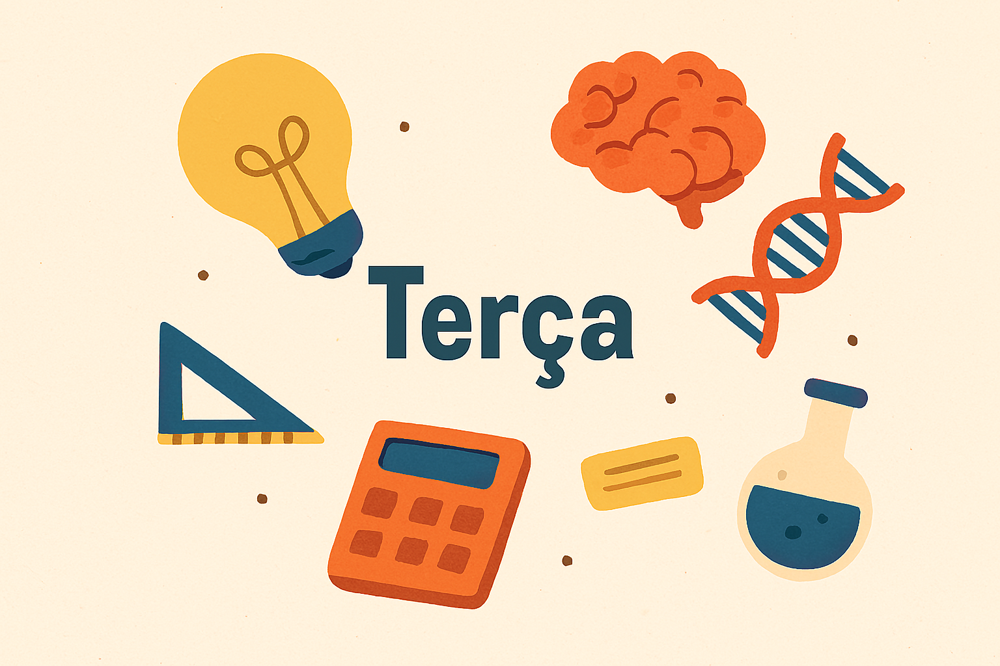
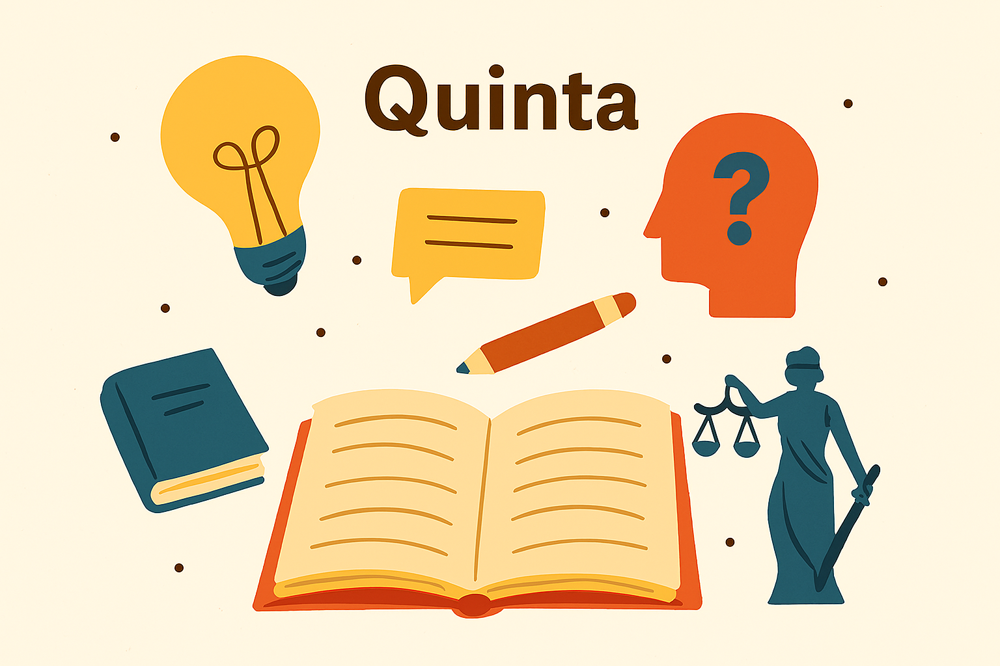

Segunda-Feira
Nesta segunda-feira, o foco será em Português e História. A jornada começa com interpretação de texto, gêneros e figuras de linguagem. Em seguida, mergulhamos nos principais períodos da História doBrasil.
Terça-Feira
Nesta segunda-feira, o foco será em Português e História. A jornada começa com interpretação de texto, gêneros e figuras de linguagem. Em seguida, mergulhamos nos principais períodos da História doBrasil.
Quarta-feira
Nesta segunda-feira, o foco será em Português e História. A jornada começa com interpretação de texto, gêneros e figuras de linguagem. Em seguida, mergulhamos nos principais períodos da História doBrasil.
Quinta-feira
Nesta segunda-feira, o foco será em Português e História. A jornada começa com interpretação de texto, gêneros e figuras de linguagem. Em seguida, mergulhamos nos principais períodos da História doBrasil.
Sexta-feira
Nesta segunda-feira, o foco será em Português e História. A jornada começa com interpretação de texto, gêneros e figuras de linguagem. Em seguida, mergulhamos nos principais períodos da História doBrasil.
Sabado
Nesta segunda-feira, o foco será em Português e História. A jornada começa com interpretação de texto, gêneros e figuras de linguagem. Em seguida, mergulhamos nos principais períodos da História doBrasil.